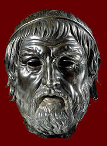

Sophokles
496/5 - 406/5 BC

Sophokles was an Athenian playwright. He wrote tragedies. He created more than 120 plays and won 18 victories at the City Dionysia, a festival in Athens in which people honoured the god Dionysos by performing plays in a competition. Some of his plays include Philoctetes, Electra and Antigone.
Sophokles, like Euripides, created very strong female characters in his plays. For example, in Electra, he makes the main female character admirable, brave and strong, even though she has helped murder her mother.
|